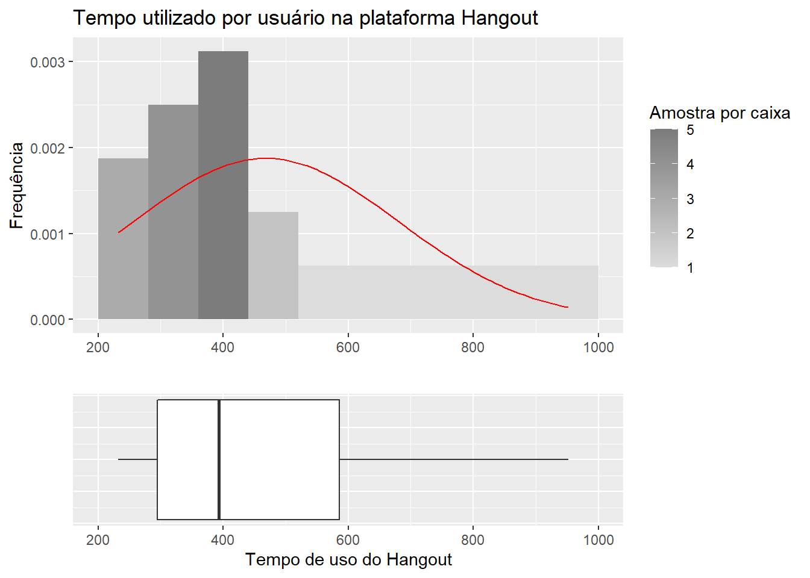
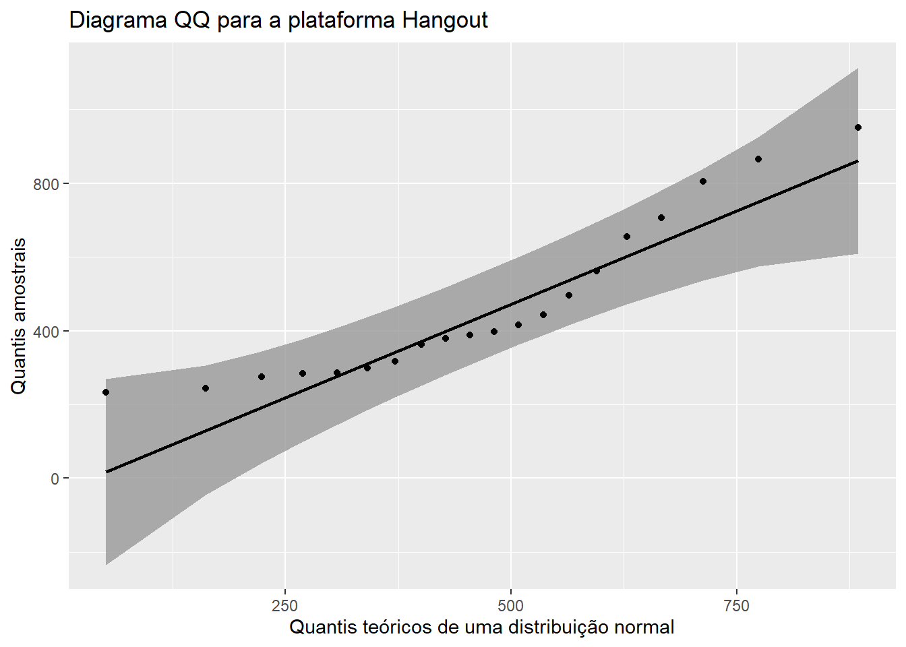
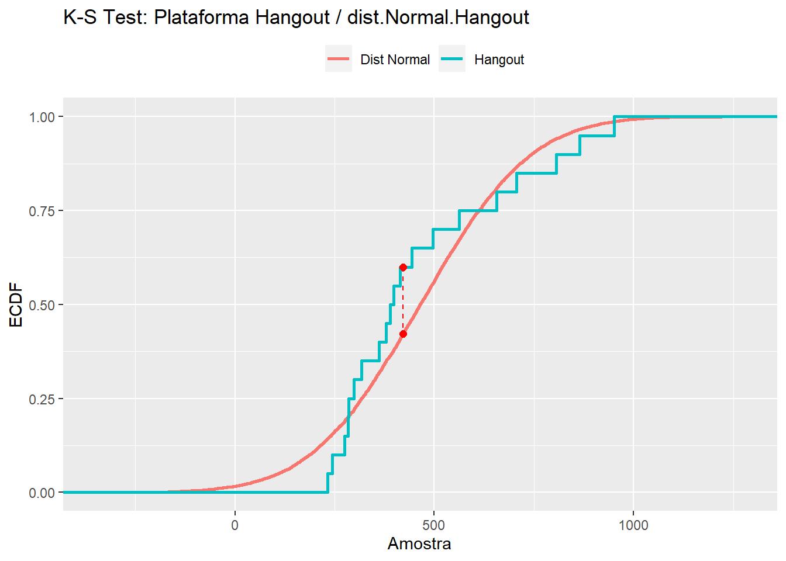

3 Análise de normalidade para as amostras que utilizaram a plataforma Hangout
Serão aplicados os mesmos testes utilizados para a amostra Zoom.
3.1 Análise dos gráficos

Foi plotado um diagrama de caixas, um histograma com 10 caixas (bins) e uma curva gaussiana com a média e desvio padrão iguais aos da amostra de tempo utilizado na ferramenta Hangout, para utilizar como referência visual.
Aparentemente a curva não segue uma distribuição normal devido aos valores maiores possuirem menor frequência na amostra.
A baixa frequência nos valores à direita faz com que haja assimetria positiva na amostra.

Observa-se que os pontos são plotados ao longo da reta que representam os quantis de uma distribuição normal, e não há valores extremos.
Portanto, baseado na visualização dos gráficos pode-se inferir que a amostra foi retirada de uma população que segue uma distribuição normal.
3.2 Cálculo da curtose e assimetria
Abaixo são calculados os mesmos parâmetros para a amostra Zoom:
curtoseZoom <- kurtosis(Hangout$Tempo)
assimetriaZoom <- skewness(Hangout$Tempo)
cat(" Curtose para as amostras que utilizaram a plataforma Hangout: ", curtoseZoom,"\n","Assimetria para as amostras que utilizaram a plataforma Hangout: ", assimetriaZoom)## Curtose para as amostras que utilizaram a plataforma Hangout: -0.6120307
## Assimetria para as amostras que utilizaram a plataforma Hangout: 0.8665088Percebe-se que os valores estão desviados do valor esperado para uma curva normal. Quanto à curtose pode-se classificar a amostra como platicúrtica, ou seja, mais achatada que uma distribuição normal, embora em baixa intensidade.
A partir da assimetria calculada pode-se afirmar que a distribuição possui uma assimetria positiva.
Portanto, a partir dos parâmetros calculados, conclui-se que a amostra pode ter sido retirada de uma população que segue uma distribuição normal, pois seus parâmetros pouco se distanciam dos parâmetros de uma curva normal (0.0 e 0.0 para assimetria e curtose).
3.3 Testes estatísticos
3.3.1 Teste de Shapiro-Wilk:
Abaixo a amostra Hangout é testada para normalidade seguindo o método de Shapiro-Wilk:
##
## Shapiro-Wilk normality test
##
## data: Hangout$Tempo
## W = 0.87213, p-value = 0.01281A partir do teste aplicado nas amostras que utilizaram Hangout pode-se afirmar que:
A um nível de significância de 0.1 ou 0.05 a hipótese nula pode ser rejeitada chegando-se a conclusão que a amostra não vem de uma população que segue uma distribuição normal.
A um nível de significância de 0.01 a hipótese nula não pode ser rejeitada chegando-se a conclusão que a amostra vem de uma população que segue uma distribuição normal.
A depender do nível limiar de significância aplicado pelo pesquisador ambas as conclusões podem ser adotadas.
3.3.2 Teste de Kolmogorov-Smirnov:
O teste de Kolmogorov pode ser utilizado para comparar duas amostras ou para comparar uma amostra com uma distribuição padrão.
O teste de Kolmogorov apresenta a estatíca D: Máxima diferença absoluta entre duas funções de distribuições cumulativas e possui um valor P para representar a significância estatística do teste. O teste de Kolmogorov possui as seguintes hipóteses nulas:
Comparação entre duas amostras: H0: As duas amostras foram retiradas de uma população com a mesma distribuição.
Comparação entre uma amostra e uma distribuição de referência: H0: A amostra foi retirada de uma população que segue a distribuição de referência.
Aplica-se então o teste para comparar a amostra Zoom a uma distribuição normal de média e desvio padrão iguais aos da amostra:
testeKSHangout <- ks.test(Hangout$Tempo, "pnorm", mean=mean(Hangout$Tempo), sd=sd(Hangout$Tempo))
testeKSHangout##
## One-sample Kolmogorov-Smirnov test
##
## data: Hangout$Tempo
## D = 0.19626, p-value = 0.375
## alternative hypothesis: two-sidedA partir das informações contidas no teste:
A um nível de significância de 0.1 a hipótese nula não pode ser rejeitada chegando-se a conclusão que a amostra segue uma distribuição normal.
A visualização da distribuição cumulativa comparada com a distribuição cumulativa da curva normal é mostrada em seguida:
dist.Normal.Hangout<- rnorm(10000, mean(Hangout$Tempo), sd(Hangout$Tempo))
gera_ksplot(Hangout, dist.Normal.Hangout) Teste de lognormalidade para a amostra Zoom:
fitlogHangout <- fitdistr(Hangout$Tempo, "lognormal")$estimate
meanlogHangout <- fitlogHangout[1]
sdlogHangout <- fitlogHangout[2]
testeKSlogHangout <- ks.test(Hangout$Tempo, "plnorm", meanlogHangout, sdlogHangout)
testeKSlogHangout##
## One-sample Kolmogorov-Smirnov test
##
## data: Hangout$Tempo
## D = 0.12583, p-value = 0.871
## alternative hypothesis: two-sidedA partir das informações contidas no teste:
A qualquer nível de significância comumente utilizado a hipótese não nula pode ser rejeitada chegando-se a conclusão que a amostra segue uma distribuição lognormal.